Rating Prediction of Airbnb Listings
Imagine you are working with AirBNB and your boss wants to know popularity of listings, so they could have insights to setup proper promotions and marketing plans. However, doing a survey asking customer preferences will be costly and time consuming. One interesting method is to find some insight from the historical listing data we already have. This project aims to predict the listing popularity using review per month as a proxy. The company will then have some ideas how popular each listing will be even before it is created. They also could use this information to plan other business strategies such as promotions and marketing campaigns later on.
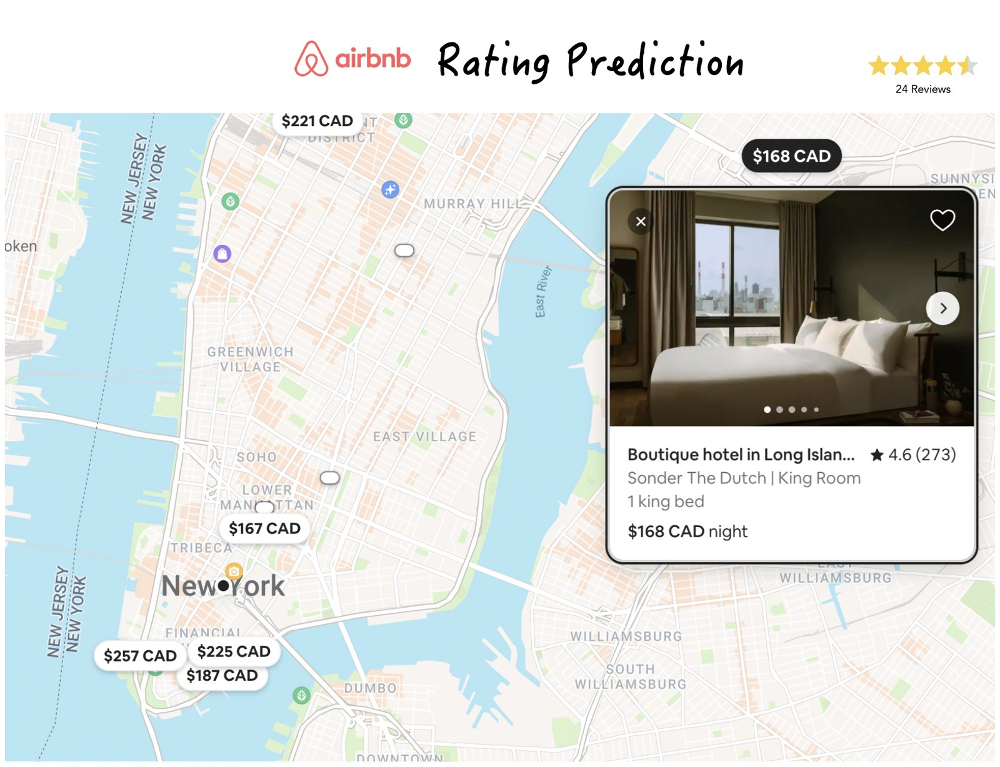
AirBNB Rating prediction
In this project, we will use the AirBNB New York City Airbnb listings from 2019 dataset available online on Kaggle. We will follow the machine learning framework as steps below,
Understand data and preprocessing
Data splitting
EDA
Feature engineering
Construct a pipeline
Baseline model
Linear models
Gradient-Boosted Tree models
Feature selection
Hyperparameter optimization
Interpretation and feature importances
Test result
Understand data and preprocessing
In this project, we will try to predict the AirBNB listing popularity by using the number of review per month (reviews_per_month) as a proxy, then we can use this model to predict whether listing will be popular once create it. In therm of the data, there are totally 16 variables with a combination of numeric, categorical, and text features such as
id : Numerical data but not related to our problem and should be drop.
name : Review from users, should be transformed with Bag-of-word.
host_id : Unique id of hosts.
host_name : Name of hosts, not related and got ethic problem, so should be drop.
neighbourhood_group : Categorical data of neighbourhood groups.
neighbourhood : Categorical data of neighbourhoods.
latitude : Latitude of each properties.
longitude : Longitude of each properties.
room_type : Type of rooms (Categorical).
price : Price of each listing.
minimum_nights : A minimum number of staying night.
number_of_reviews : A number of reviews of each properties.
last_review : Last time when it got reviewed.
reviews_per_month : A number of reviews per months that we want to predict.
calculated_host_listings_count : Number of listing by hosts.
availability_365 : Availability of listing per year.
After reading the data, we started checking the data by airbnb.head() and airbnb.info(), we could see that we have a good size of data with 48,895 observations in total, and also found that there are some missing-value features in this dataset that need to be handle.
However, there are some features that are not useful for prediction such as id and last_review. Also there is one feature that does not relate and we should not use in term of ethic such as host_name as well, therefore, decided to drop these 3 features.
Then with the missing-value data, there are several ways to deal with it, but I finally decided to drop the missing-value data since I am not sure whether what data should be used to fill it. You can argue that we can fill it with zero, but in this case, since we can not discuss with the domain expert or the person who collected the data about the data behavior and its collection, therefore, it is better to drop these missing values. In addition, even we drop these missing values, we still have a good size of data of 38,837 observations.
Furthermore, if we could discuss to the domain expert, we may know more on how to treat these missing values. Other methods that we can consider may be filling with,
fill with zero value
fill with mean value
KNN imputer
I also changes the column name of availability_365 to be availability to be more meaningful and easy to understand. All codes for this step are as below.
# import libraries
import pandas as pd
import numpy as np
import warnings
warnings.filterwarnings('ignore')
import warnings
warnings.simplefilter(action="ignore", category=DeprecationWarning)
warnings.simplefilter(action="ignore", category=UserWarning)
import altair as alt
# Handle large data sets without embedding them in the notebook
alt.data_transformers.enable('data_server')
# Include an image for each plot since Gradescope only supports displaying plots as images
alt.renderers.enable('mimetype')
from wordcloud import WordCloud
import matplotlib.pyplot as plt
from sklearn.model_selection import train_test_split
from sklearn.preprocessing import PolynomialFeatures
from sklearn.model_selection import cross_val_score, cross_validate, train_test_split
from sklearn.pipeline import Pipeline, make_pipeline
from sklearn.compose import ColumnTransformer, make_column_transformer
from sklearn.preprocessing import FunctionTransformer
from sklearn.compose import TransformedTargetRegressor
from sklearn.impute import SimpleImputer
from sklearn.preprocessing import (
MinMaxScaler,
OneHotEncoder,
OrdinalEncoder,
StandardScaler,
)
from sklearn.feature_extraction.text import CountVectorizer
from sklearn.dummy import DummyRegressor
from sklearn.linear_model import LinearRegression
from sklearn.linear_model import Ridge, RidgeCV
from sklearn.linear_model import Lasso, LassoCV
from sklearn.linear_model import ElasticNetCV
from sklearn.ensemble import RandomForestRegressor
import xgboost as xg
from lightgbm.sklearn import LGBMRegressor
from catboost import CatBoostRegressor
from sklearn.feature_selection import SelectFromModel
from sklearn.feature_selection import RFE, RFECV
from sklearn.feature_selection import SequentialFeatureSelector
from sklearn.model_selection import RandomizedSearchCV# Import data as dataframe and preliminary check the data
airbnb = pd.read_csv('data/AB_NYC_2019.csv')
airbnb.head()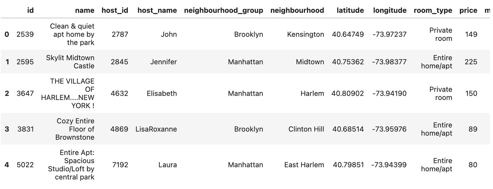
# Checking data with .info() to see type and missing value
airbnb.info()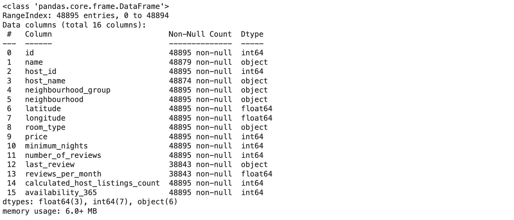
# Decide to drop some features since they are unrelated to prediction and ethic problem
airbnb = airbnb.drop(columns = ['id','last_review','host_name'])
# Check NA/missing-value data
airbnb.isna().sum()
# Decide to drop NA/missing value, and we still have a good size of data
airbnb = airbnb.dropna()
airbnb.isna().sum()
# Change column names to be meaningful names
airbnb.rename(columns = {'availability_365':'availability'}, inplace = True)
airbnb.head()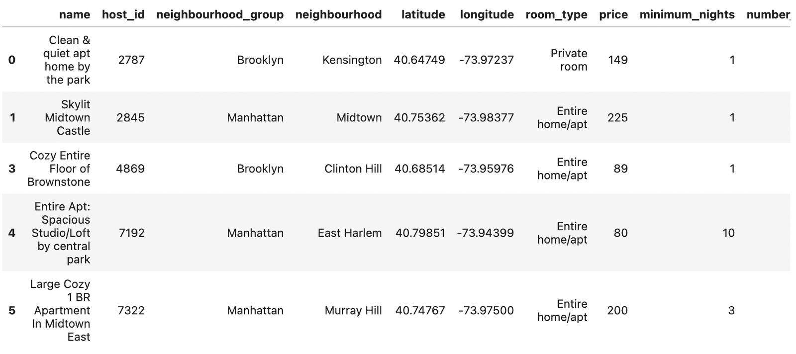
Data splitting
I started with spliting train and test dataset with 70%-30% ratio but it took very long time to train the model and finally my laptop was hank. I then decided to split train and test data as 50%-50% ratio, but it still took a very long time running some model such as RidgeCV, I finally decided to use 30%-70% ratio, even with 30% training data, we still have a good size of data to train the model, 11,651 observations. Please be noted that we can increase the train data size if we have more powerful resources or want the better result.
# Splitting data with 50-50 ratio
train_df, test_df = train_test_split(airbnb, test_size=0.7, random_state=123)
train_df.head()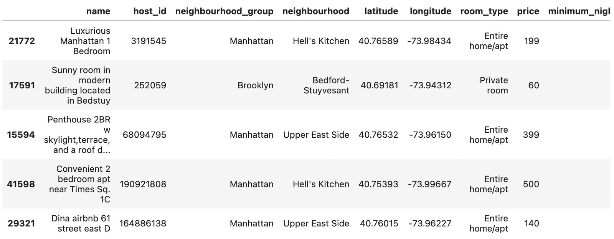
EDA
For numerical features,
latitude and longitude are quite normally distributed and we do not need to do any pre-processing.
price is right skew distributed, so it is better to perform log transformation to have better normally distributed feature.
reviews_per_month is right skew as well, since it is our target, we can use transformed target regressor.
For categorical features, neighbourhood_group, neighbourhood, room_type, minimum_nights, number_of_reviews, availability, they have some low value counts in some categories, we can consider dropping these low-count category, name is text feature which we can explore it with wordcloud which we can see some common words from the reviews.
Finally, I decided to choose MAE as my metric because we can communicate to the user in term of how much our model deviate from the number_of_review target on average such as 0.5 review off. Some selected plots are shown as below.
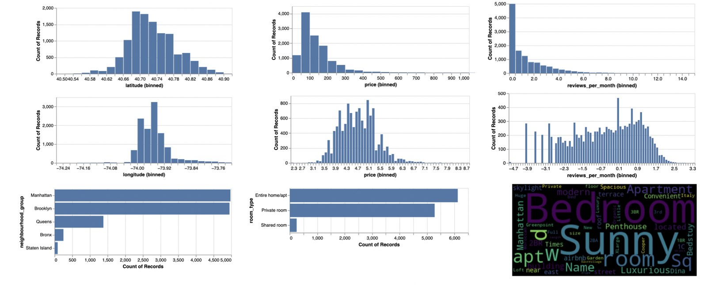
Feature engineering
We will try to create more features with nltk package to have number_of_words, sentiment, and number_of_chars as new features.
# Feature engineering with nltk on text feature
import nltk
from nltk.sentiment.vader import SentimentIntensityAnalyzer
nltk.download("vader_lexicon")
nltk.download("punkt")
sid = SentimentIntensityAnalyzer()
def get_relative_length(text, TWITTER_ALLOWED_CHARS=280.0):
"""
Returns the relative length of text.
Parameters:
------
text: (str)
the input text
Keyword arguments:
------
TWITTER_ALLOWED_CHARS: (float)
the denominator for finding relative length
Returns:
-------
relative length of text: (float)
"""
return len(text) / TWITTER_ALLOWED_CHARS
def get_length_in_words(text):
"""
Returns the length of the text in words.
Parameters:
------
text: (str)
the input text
Returns:
-------
length of tokenized text: (int)
"""
return len(nltk.word_tokenize(text))
def get_sentiment(text):
"""
Returns the compound score representing the sentiment: -1 (most extreme negative) and +1 (most extreme positive)
The compound score is a normalized score calculated by summing the valence scores of each word in the lexicon.
Parameters:
------
text: (str)
the input text
Returns:
-------
sentiment of the text: (str)
"""
scores = sid.polarity_scores(text)
return scores["compound"]
# Add new text features
train_df = train_df.assign(n_words=train_df["name"].apply(get_length_in_words))
train_df = train_df.assign(vader_sentiment=train_df["name"].apply(get_sentiment))
train_df = train_df.assign(rel_char_len=train_df["name"].apply(get_relative_length))
test_df = test_df.assign(n_words=test_df["name"].apply(get_length_in_words))
test_df = test_df.assign(vader_sentiment=test_df["name"].apply(get_sentiment))
test_df = test_df.assign(rel_char_len=test_df["name"].apply(get_relative_length))
# Inspect data
train_df.head()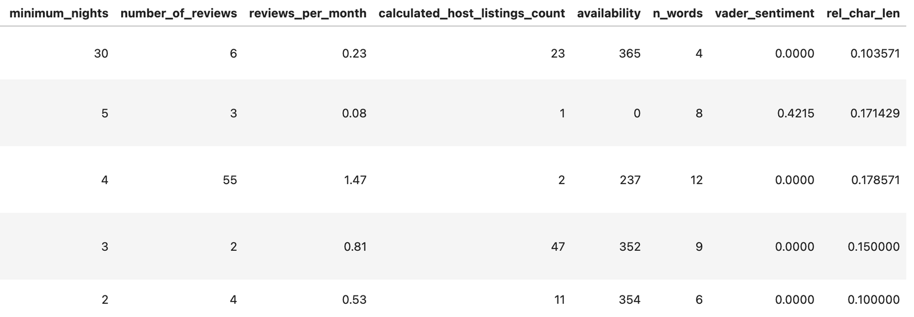
Construct a ML pipeline
# setup feature types
numerical_features = ['latitude', 'longitude', 'calculated_host_listings_count',
'n_words', 'vader_sentiment', 'rel_char_len']
log_features = ['price']
categorical_features = ['host_id', 'neighbourhood_group', 'neighbourhood', 'room_type',
'minimum_nights', 'number_of_reviews', 'availability']
text_features = ['name']
drop_features = []
# setup log transformation
def log_transform(x):
return np.log1p(x)
log_transformer = make_pipeline(FunctionTransformer(log_transform), StandardScaler())
# define pre-processor
preprocessor = make_column_transformer(
(StandardScaler(), numerical_features),
(log_transformer, log_features),
(OneHotEncoder(handle_unknown="ignore"), categorical_features),
(CountVectorizer(stop_words='english'), text_features[0]),
("drop", drop_features)
)
preprocessor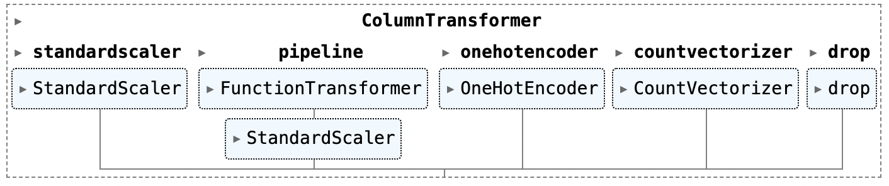
Baseline model
Before starting with any ML models, it is a good practice to try the simple baseline models, so we know how much baseline do we have and sometimes, it shows how the imbalance of our data to us as well.
# Initial model result
cross_val_results = {}
# Baseline model with DummyRegressor
dc = make_pipeline(preprocessor, DummyRegressor())
# Cross-validation
cv_df = pd.DataFrame(
cross_validate(
dc, X_train, y_train,
cv = 5,
return_train_score = True,
scoring = 'neg_mean_absolute_error'
))
# Store CV score
cross_val_results['dummy'] = cv_df.agg(['mean', 'std']).round(3).T
cross_val_results['dummy']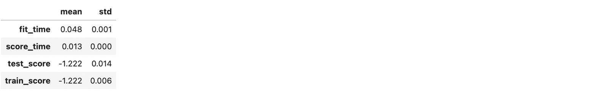
Linear models
In this section, 2 types of linear models such Linear regression and Ridge were implemented. For Ridge, I first tried with RidgeCV(), but it took very long time to run and finally my laptop was hank, so I decided to use Ridge() with RandomizedCV search to tune alpha parameter instead.
The cv score of DummyRegressor is -1.222, which the cv score of LinearRegression() is -1.101, and the cv score of Ridge() is -0.08619. We can see that Ridge() with optimized regularization alpha parameter(alpha = 100) got the best result among Dummyregressor() and LinearRegression().
Please be noted that the score is negative mean absolute error.
# Ridge with RandomizedSearchCV
ridge = make_pipeline(preprocessor, Ridge())
param_grid = {
"ridge__alpha": 10.0 ** np.arange(-10, 10, 1)
}
random_search_ridge = RandomizedSearchCV(
ridge, param_distributions=param_grid, n_jobs=-1, n_iter=10, cv=5,
return_train_score=True,
scoring = 'neg_mean_absolute_error',
random_state=123
)
random_search_ridge.fit(X_train, y_train)
# CV result - Ridge with RandomizedSearchCV
result_ridge = pd.DataFrame(random_search_ridge.cv_results_)[
[
"mean_fit_time",
"mean_score_time",
"mean_test_score",
"mean_train_score",
'std_fit_time',
'std_score_time',
'std_test_score',
'std_train_score',
"param_ridge__alpha",
"rank_test_score"
]
].set_index("rank_test_score").sort_index().iloc[[0],:]
# Store CV score
data = {'mean': list(result_ridge.iloc[0,0:4]),
'std': list(result_ridge.iloc[0,4:8])}
cross_val_results['ridge'] = pd.DataFrame(data)
cross_val_results['ridge'].index=["fit_time", "score_time",'test_score','train_score']
cross_val_results['ridge']
# Find best param
rp_ridge = random_search_ridge.best_params_
rp_ridge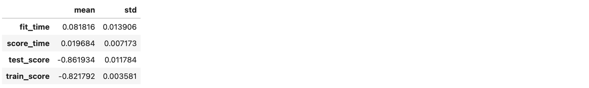
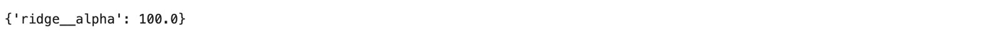
Gradient-Boosted Tree Models
In this section, we tried some nonlinear models such as RandomForest, XGboost, LGBM, and CatBoost.
The cv score of each model are,
RandomeForest CV score = -0.775
XGboost CV score = -0.773
LGBM CV score = -0.761
CatBoost CV score = -0.785
In term of underfitting/overfitting, in theory, all these 3 nonlinear models will not have overfitting since it uses a number of estimators to produce the final prediction, and it is a kind of diversity, so even we increase the number of estimators, we will not have the overfitting problem.
Yet, from the result, we can see that RandomForest suffers with overfitting with train score at -0.286, and test score is -0.775. May be it is because we haven't tuned its hyperparameters yet.
For other models, they don't have overfitting problem.
We can see that the LGBM got the best score and it is better than all linear models and DummyRegressor in previous questions.
# Different nonlinear models
pipe_rf = make_pipeline(preprocessor, RandomForestRegressor(n_jobs=-1,random_state=123))
pipe_xgb = make_pipeline(preprocessor, xg.XGBRegressor(random_state=123, verbosity=0))
pipe_lgbm = make_pipeline(preprocessor, LGBMRegressor(random_state=123))
pipe_cat = make_pipeline(preprocessor, CatBoostRegressor(verbose=0, random_state=123))
regressors = {
"random forest": pipe_rf,
"XGBoost": pipe_xgb,
"LightGBM": pipe_lgbm,
"CatBoost": pipe_cat
}
for (name, model) in regressors.items():
cross_val_results[name] = pd.DataFrame(cross_validate(
model, X_train, y_train, cv=5,
return_train_score=True,
scoring = 'neg_mean_absolute_error'
)).agg(['mean', 'std']).round(3).T
pd.concat(cross_val_results, axis=1) 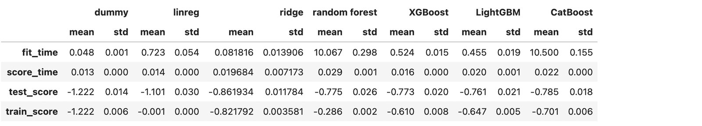
Feature selection
There are many techniques to perform feature selection such Boruta, MDI, MDA, or applying some explanation factors, but I decided to use the Lasso model to do feature selection. With the previous step, we can see that the LGBM is the best performing model, so I chose to fit the second model with LGBM.
We can see that Lasso_LGBM CV score is -0.760 which is quite the same we CV score of LGBM (-0.761). This method does not improve the score.
Please be noted that this model took very long time to run, so I decided to comment it out, but you can see the result as comments below.
# Setup the pipeline
lasso_lgbm = make_pipeline(preprocessor,
SelectFromModel(LassoCV(max_iter=20000, tol=0.01)),
LGBMRegressor(random_state=123))
# Cross-validation
cv_df = pd.DataFrame(
cross_validate(
lasso_lgbm, X_train, y_train,
cv = 5,
return_train_score = True,
scoring = 'neg_mean_absolute_error'
))
cross_val_results['lasso_lgbm'] = cv_df.agg(['mean', 'std']).round(3).T
cross_val_results['lasso_lgbm'] mean std
fit_time 457.223 16.450
score_time 0.023 0.001
test_score -0.760 0.009
train_score -0.638 0.007Hyperparameter optimization
The cv score of several models with hyperparameter optimization are reported below,
RandomForest_tune CV score = -0.894
XGboost_tune CV score = -0.7427
LGBM_tune CV score = -0.772
CatBoost_tune CV score = -0.794
We can see that for some models, with hyperparameter tuning, we got lower score, but for some model such as XGboost_tune, we got the better score.
This may be because we do not cover a great range of hyperparameter due to time and resources limitation, the score should be improve if we do huperparameter tuning well.
Right now, our best performing model is XGboost_tune with -0.7427 cv score.
# Hyperparameter optimization - RandomForest
rf_tune = make_pipeline(preprocessor, RandomForestRegressor(n_jobs=-1,random_state=123))
param_grid_rf = {
"randomforestregressor__n_estimators": [10,100,500,1_000],
"randomforestregressor__max_depth": [1,2,3,4,5]
}
random_search_rf = RandomizedSearchCV(
rf_tune, param_distributions=param_grid_rf, n_jobs=-1, n_iter=10, cv=5,
return_train_score=True,
scoring = 'neg_mean_absolute_error',
random_state=123
)
random_search_rf.fit(X_train, y_train)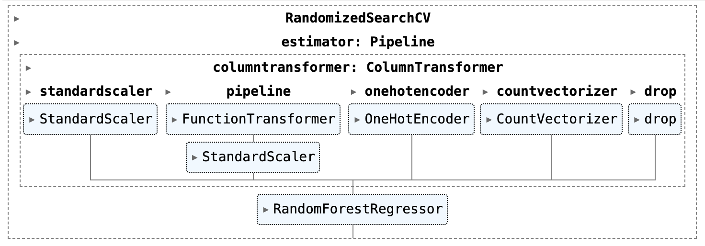
# CV result - RandomForest
result_rf = pd.DataFrame(random_search_rf.cv_results_)[
[
"mean_fit_time",
"mean_score_time",
"mean_test_score",
"mean_train_score",
'std_fit_time',
'std_score_time',
'std_test_score',
'std_train_score',
"rank_test_score"
]
].set_index("rank_test_score").sort_index().iloc[[0],:]
# Store CV score
data = {'mean': list(result_rf.iloc[0,0:4]),
'std': list(result_rf.iloc[0,4:8])}
cross_val_results['rf_tune'] = pd.DataFrame(data)
cross_val_results['rf_tune'].index=["fit_time", "score_time",'test_score','train_score']
cross_val_results['rf_tune']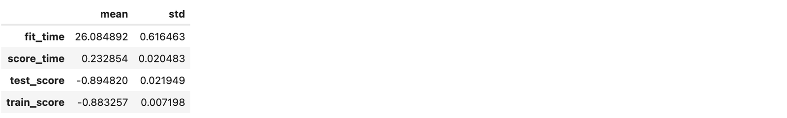
# Hyperparameter optimization - XGboost
pipe_xgb_tune = make_pipeline(preprocessor, xg.XGBRegressor(random_state=123, verbosity=0))
param_grid_xgb = {
"xgbregressor__n_estimators": [10,100,500,1_000],
"xgbregressor__max_depth": [1,2,3,4,5]
}
random_search_xgb = RandomizedSearchCV(
pipe_xgb_tune, param_distributions=param_grid_xgb, n_jobs=-1, n_iter=10, cv=5,
return_train_score=True,
scoring = 'neg_mean_absolute_error',
random_state=123
)
random_search_xgb.fit(X_train, y_train)# CV result - XGboost
result_xgb = pd.DataFrame(random_search_xgb.cv_results_)[
[
"mean_fit_time",
"mean_score_time",
"mean_test_score",
"mean_train_score",
'std_fit_time',
'std_score_time',
'std_test_score',
'std_train_score',
"rank_test_score"
]
].set_index("rank_test_score").sort_index().iloc[[0],:]
# Store CV score
data = {'mean': list(result_xgb.iloc[0,0:4]),
'std': list(result_xgb.iloc[0,4:8])}
cross_val_results['xgb_tune'] = pd.DataFrame(data)
cross_val_results['xgb_tune'].index=["fit_time", "score_time",'test_score','train_score']
cross_val_results['xgb_tune']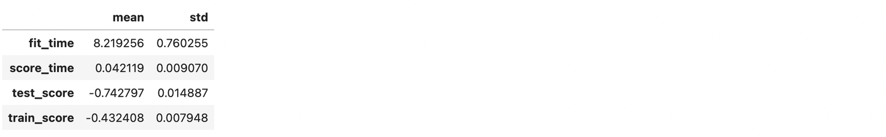
# Hyperparameter optimization - LightXGB
pipe_lgbm_tune = make_pipeline(preprocessor, LGBMRegressor(random_state=123))
param_grid_lgbm = {
"lgbmregressor__n_estimators": [10,100,500,1_000],
"lgbmregressor__max_depth": [1,2,3,4,5]
}
random_search_lgbm = RandomizedSearchCV(
pipe_lgbm_tune, param_distributions=param_grid_lgbm, n_jobs=-1, n_iter=10, cv=5,
return_train_score=True,
scoring = 'neg_mean_absolute_error',
random_state=123
)
random_search_lgbm.fit(X_train, y_train)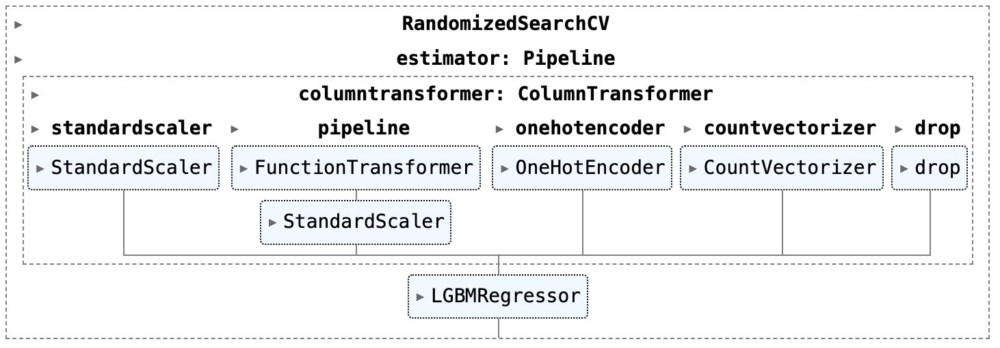
# CV result - LightXGB
result_lgbm = pd.DataFrame(random_search_lgbm.cv_results_)[
[
"mean_fit_time",
"mean_score_time",
"mean_test_score",
"mean_train_score",
'std_fit_time',
'std_score_time',
'std_test_score',
'std_train_score',
"rank_test_score"
]
].set_index("rank_test_score").sort_index().iloc[[0],:]
# Store CV score
data = {'mean': list(result_lgbm.iloc[0,0:4]),
'std': list(result_lgbm.iloc[0,4:8])}
cross_val_results['lgbm_tune'] = pd.DataFrame(data)
cross_val_results['lgbm_tune'].index=["fit_time", "score_time",'test_score','train_score']
cross_val_results['lgbm_tune']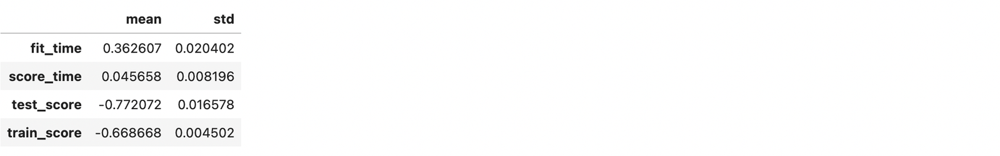
# Hyperparameter optimization - CatBoost
pipe_cat_tune = make_pipeline(preprocessor, CatBoostRegressor(verbose=0, random_state=123))
param_grid_cat = {
"catboostregressor__n_estimators": [10,100,500,1_000],
"catboostregressor__max_depth": [1,2,3,4,5]
}
random_search_cat = RandomizedSearchCV(
pipe_cat_tune, param_distributions=param_grid_cat, n_jobs=-1, n_iter=10, cv=5,
return_train_score=True,
scoring = 'neg_mean_absolute_error',
random_state=123
)
random_search_cat.fit(X_train, y_train)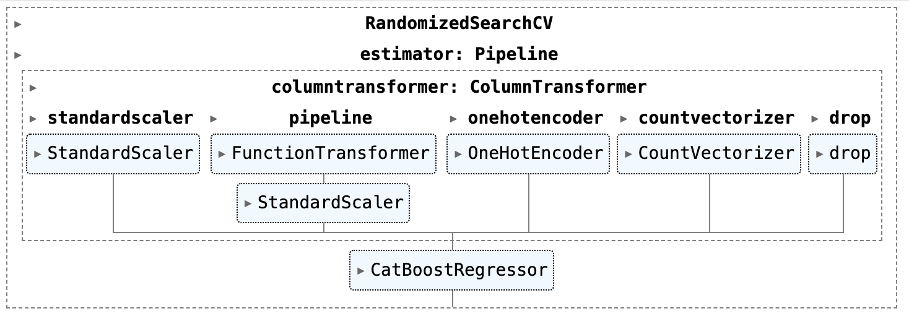
# CV result - CatBoost
result_cat = pd.DataFrame(random_search_cat.cv_results_)[
[
"mean_fit_time",
"mean_score_time",
"mean_test_score",
"mean_train_score",
'std_fit_time',
'std_score_time',
'std_test_score',
'std_train_score',
"rank_test_score"
]
].set_index("rank_test_score").sort_index().iloc[[0],:]
# Store CV score
data = {'mean': list(result_cat.iloc[0,0:4]),
'std': list(result_cat.iloc[0,4:8])}
cross_val_results['cat_tune'] = pd.DataFrame(data)
cross_val_results['cat_tune'].index=["fit_time", "score_time",'test_score','train_score']
cross_val_results['cat_tune']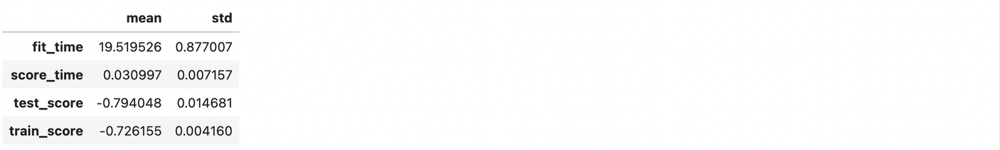
Interpretation and feature importances
Since our best performing model is XGboost_tune, so I decided to run eli5 on this model to get explanations.
We can see from the result that the top 3 most important features are,
availability_0
neighbourhood_East_Elmhurst
host_id_156684502
We may interpret that these 3 features are important in some senses such as,
if the the availibility is zero, so we know it that the room will not have a review since there is no one can stay.
the neighbourhood East Elmhurst may result in reviews_per_month
the host with id 156684502, may be a good or bad host and it is related to the reviews_per_month
Please be noted that the weight from eli5 will be only positive values.
import eli5
numerical_features = ['latitude', 'longitude', 'calculated_host_listings_count',
'n_words', 'vader_sentiment', 'rel_char_len']
log_features = ['price']
categorical_features = ['host_id', 'neighbourhood_group', 'neighbourhood', 'room_type',
'minimum_nights', 'number_of_reviews', 'availability']
text_features = ['name']
drop_features = []
feature_names = (numerical_features +
log_features +
random_search_xgb.best_estimator_.named_steps["columntransformer"].named_transformers_["onehotencoder"].get_feature_names_out().tolist() +
random_search_xgb.best_estimator_.named_steps["columntransformer"].named_transformers_["countvectorizer"].get_feature_names_out().tolist())
eli5.explain_weights(random_search_xgb.best_estimator_.named_steps["xgbregressor"],feature_names=feature_names)
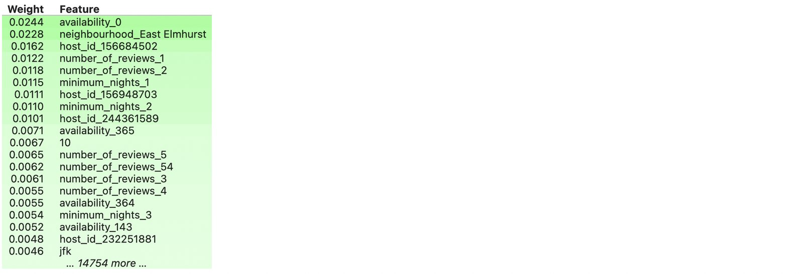
Results on the test set
With the best model, XGboost_tune, the test score is -0.739. The test score is quite the same as cv score (cv score = -0.7427 vs test score = -0.739). If we see that the test score is huge different from cv score, we might need to check it more since it should be some problems with it. It can be optimization bias problem, or something with test data.
print(f'XGboost_tune : Test score = {random_search_xgb.score(X_test, y_test):.3f}')pd.DataFrame(
random_search_xgb.predict(X_test)[0],
index=feature_names,
columns=["SHAP values"],
)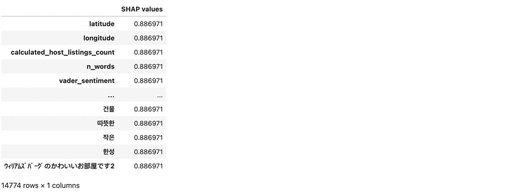
Summary
In this analysis, we try to predict the number of review per month(reviews_per_month) of each listing on AirBNB, so that we can predict in advance which listing will have high number of reviews, or we can learn contribution factors related to the number of reviews, so we can emphasize these contribution when creating a new listing.
We performed machine learning pipeline starting with inspecting data, performing data cleaning, pre-processing, EDA, and finally we performed several kinds of models including feature engineering and feature selection steps.
We can have the negative mean absolute error of cross validation set at -0.7427 and the test score at -0.739 which we can interpret that our model will predict about 0.739 reviews per months from the actual target value.
In addition, due to time and resources limit we could not try a number of possible improvement steps, so we can explore this idea later in the future,
Increase ratio of train data set to have better data to train (need more powerful resources).
There are some low value count category in categorical features, we might try dropping it.
It seems that we have one very important feature which is number of review, it is correlated with our target, we might try start using this feature and adding polynomial features and train it.
We might try expand the range of hyperparameter tuning.
We might try some stacking model to improve the score.
Since our target (reviews_per_months) is right skew distribution, we can try using log transformation with transform target regressor to have better result.